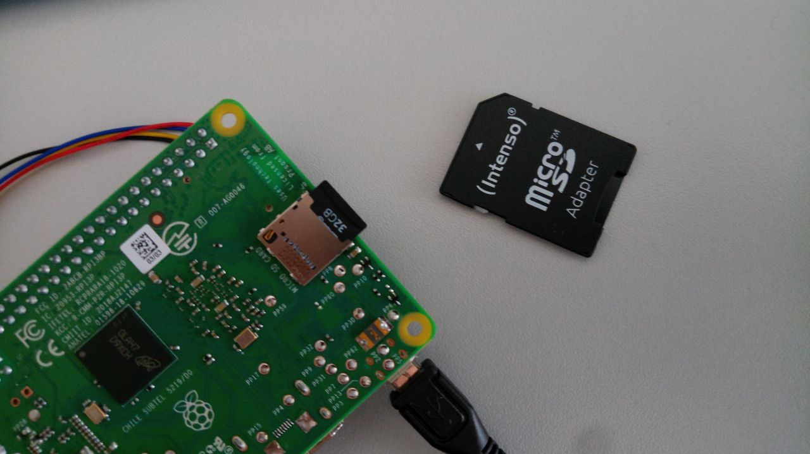

3 Working with the Raspberry Pi
3.1 Getting started
For the purpose of this course I preconfigured a Raspberry Pi system for you. It is on the micro-SD card in the envelope. Just take the micro-SD card out of the adapter and insert in the Raspberry Pi! 
3.2 The operating system
The standard operating system of the Raspberry Pi is called Raspberry Pi OS (previously Raspbian). There are two versions of it. One includes a desktop interface, which means that it comes with a graphical user interface as you know it from a normal laptop. The other one is a lite version, which can only be used “headless”, without a graphical user interface. The operating system is stored on a SD-card. For the purpose of this course I prepared a Raspberry Pi with a graphical user interface for you, so no need for you to worry about the operating system. If you come to the point that you want to set up your own Raspberry Pi, you need a SD-card reader and the micro SD-card itself. Then you can follow the instructions on https://www.raspberrypi.org/software/
3.3 Using the Raspberry Pi as a desktop computer
If you want to use the Raspberry Pi as a desktop computer you will need a USB keyboard, a USB mouse, and a monitor HDMI cable. (We are using the Raspberry Pi version 3B+.)

Raspberry Pi
The Raspberry Pi is booting as soon as you plug the power cable in.
Using the graphical user interface and also setting up a wifi connection is pretty straight forward. You can find some firther instruction here: https://projects.raspberrypi.org/en/projects/raspberry-pi-using
3.4 The Raspberry-Pi and SSH
ssh
SSH stands for Secure Shell and is a protocol to communicate securely over a network. In the usual setting of a home network, you will need to connect both your laptop and the Raspberry Pi to the same router. You can use an ethernet cable or wifi. Then you can operate the Raspberry Pi using the command line. In the next chapters you will find more information on how to use SSH and the command line, and how to set up a wifi connection on the Raspberry Pi using an SSH connection.

ssh
3.5 Establishing a Wifi connection
3.5.1 Option 1: Use keyboard, mouse and monitor

If you are using the Raspberry Pi with keyboard, mouse and monitor, it is relatively easy to set up a wifi connection. You can find some detailed instructions here: https://projects.raspberrypi.org/en/projects/raspberry-pi-using/3 Check if the wifi is working by opening a browser and entering some search term, e.g. “raspberry pi”.
3.5.2 Option 2: Ethernet Cable

Connect the Raspberry Pi to your router using an ethernet cable. Your laptop should be in the same network, either using wifi or an other ethernet cable. Usually you have only one router at home, so you should be in the same network anyway.
Find the IP-adress of your Raspberry Pi. You have different options, as described in the next chapter.
Connect to your Raspberry Pi through SSH. Follow the instructions in the chapter on SSH to connect to your Raspberry Pi.
You are now connected to your Raspberry Pi! Open the configuration page:
sudo raspi-config Choose the second option “Network Option” and the second option “Wireless Lan”. Follow the instructions.
Choose the second option “Network Option” and the second option “Wireless Lan”. Follow the instructions.
- Remove the cable. Retry to connect to your Raspberry Pi via ssh. You also might need to restart the Raspberry Pi. If you manage to connect to your Raspberry Pi via ssh without the ethernet cable plugged in, it means that you set up the wifi connection successfully.
3.5.3 Option 3: Edit a config file on the SD-card
All the files of the operating system are stored on the Micro-SD card. There is also a config file for the wifi settings. Put the Micro-SD card into a card reader. Then follow the first three steps of this instruction page: https://www.factoryforward.com/raspberry-pi-headless-wifi-setup/ Next, try to find your Raspberry’s Ip and connect via ssh as described in the next chapters.
3.5.4 Option 4: Make a hotspot with your mobile phone
Make a hotspot with following settings:
ssid (the name of the wifi-network): informatica
password: informaticaConnect your laptop to the same hotspot. Then follow the steps in the chapter of option 2, starting from the second step.